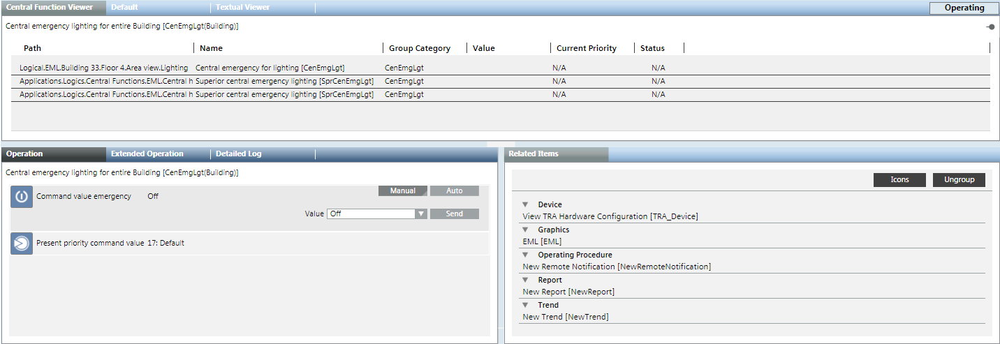
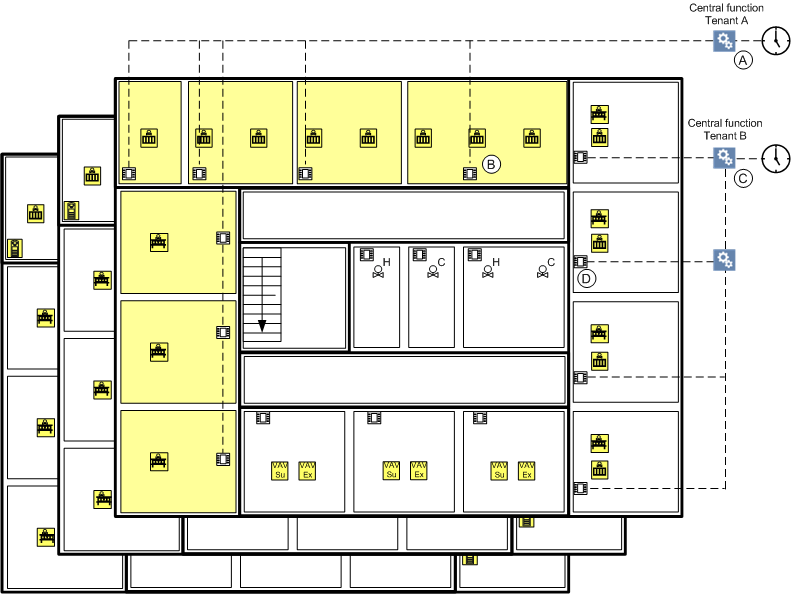
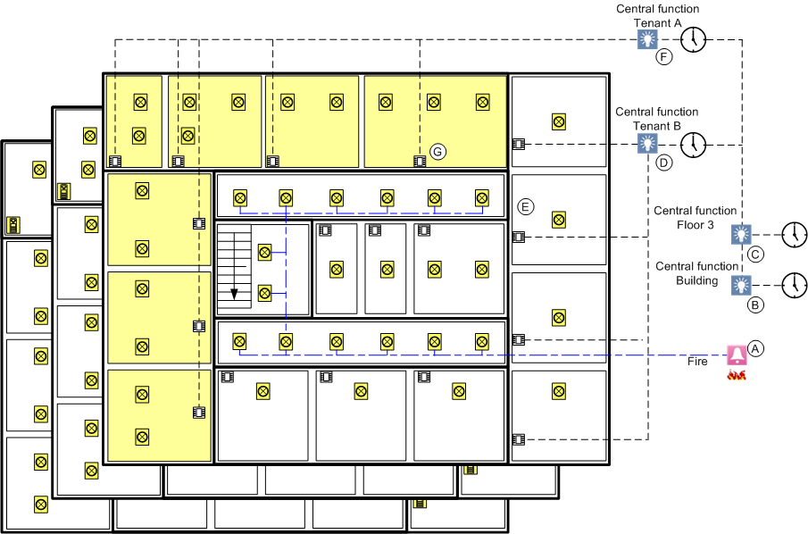
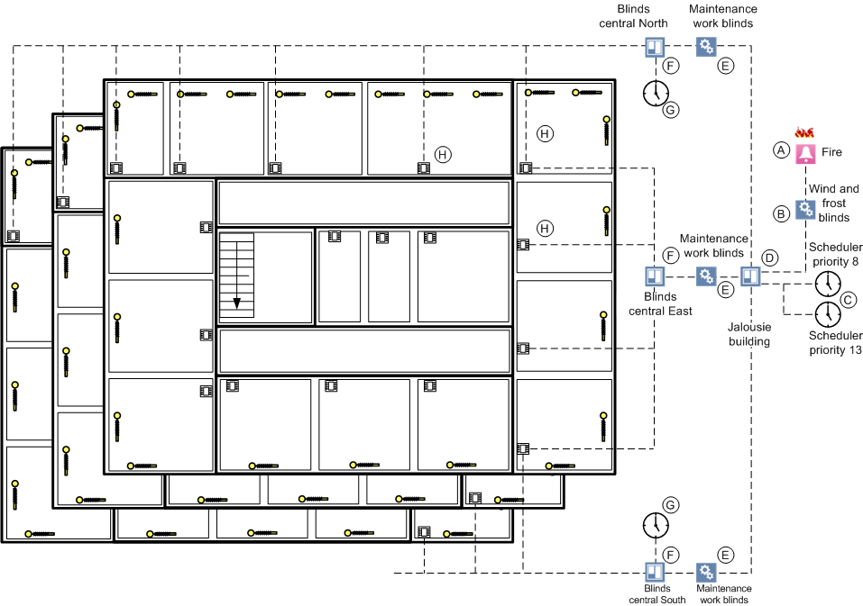
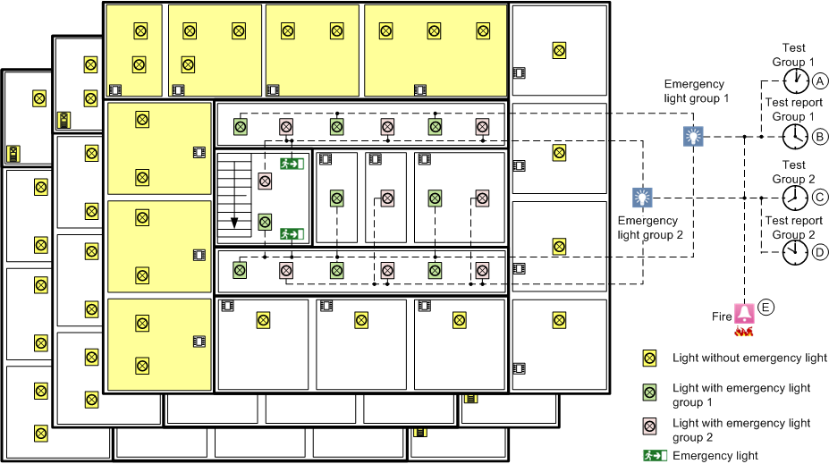

Central Function Concept
There are central functions within Desigo Automation for occupancy, lighting, shading, and emergency lights. This permits joint control of rooms belonging to a group as well as manual operation on the management platform or using a scheduler. The individual states can be displayed and switched using the Central Functions Viewer.

HVAC
The figure illustrates how the central function acts on the individual rooms, if data does not flow. There are only two renters.

Control Concept for Central Operator Function | ||
| Function | Description |
A | Central function | Controls the rooms for renter A. |
B | Room operation | Controls the room for renter A. |
C | Central function | Controls the rooms for renter B. |
D | Room operation | Controls the room for renter B. |

NOTE:
In contrast to lighting and blinds, central function cannot be controlled hierarchically (Renter > Floor > Building).
Lighting
The figure illustrates how the central function acts on the individual rooms, if data does not flow. There are only two renters.

Control Concept for Central Operator Function | ||
| Function | Description |
A | Fire alarm | Switches the light in the hallways and stairwells. |
B | Central Function | Controls the light throughout the building. |
C | Central Function | Control the light on an entire floor. |
D | Central Function | Controls the light in rooms for renter B. |
E | Room Operation | Controls the light in the room for renter B. |
F | Central Function | Controls the light in rooms for renter A. |
G | Room Operation | Controls the light in the room for renter A. |
NOTE:
Central functions can be controlled hierarchically (Renter > Floor > Building).
Shading
The figure illustrates how central functions act on the individual rooms, if data does not flow. The west facade is not depicted.

Control Concept for Central Operator Function | ||
| Function | Description |
A | Fire alarm | Raise the blinds throughout the building. |
B | Wind or frost. | Raise the blinds throughout the building. |
C | Scheduler program | Acts on the entire building (priority 8 or 13). |
D | Central Function | Control blinds throughout the building. |
E | Service function | Controls blinds for the applicable area. |
F | Central Function | Controls blinds for the applicable area. |
G | Scheduler program | Controls blinds for the applicable area. |
H | Room Operation | Controls the blinds in the room. |
NOTE:
The central function can be controlled hierarchically (Facade > Building).
Emergency lighting
The figure illustrates how the central function for emergency lighting acts on the individual emergency lights in a building, if data does not flow.

Control Concept for Central Emergency Lighting | ||
| Function | Description |
A | Test group 1 | Controls the test function for emergency lighting for group 1. |
B | Test report group 1 | Controls the test report for emergency lighting for group 1. |
C | Test group 2 | Controls the test function for emergency lighting for group 2. |
D | Test report group 2 | Controls the test report for emergency lighting for group 2. |
E | Fire alarm | Switches on emergency lighting in halls and stairwells. The signal occurs via a binary input that normally is controlled by a separate Danger Management System. Desigo Automation is then used to control lighting. |
NOTE:
A building must be subdivided into a minimum of two test groups to guarantee the availability of emergency lighting.